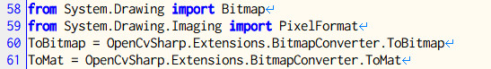

OpenCVはフリー（OpenCV 4.4以前: 三条項BSDライセンス / OpenCV 4.5以降: Apache v2）で使える定番の画像処理ライブラリです。
CPythonには「Pillow」や「OpenCV」などの専用の画像処理ライブラリがあり、pipコマンドで簡単にインストールできます。IronPythonにはありません。
そこで、C#（.NET Framework）用のOpenCVラッパー 「OpenCvSharp」を使って、この画像処理ライブラリをIronPythonから利用します。
本記事はこちらの記事を、「Visual Studio 2022」 + 「OpenCvSharp 4.6」 + 「IronPython 3.4」の内容で修正しています。 ちなみに、.NET Framework 4.8です。.Net Core系も考えましたが、.NET MAUIの件もあるので様子見です。
IronPythonから利用するための手順
IronPythonからC#のライブラリを利用する の手順で行いますが、一から説明するのは大変なので、こちら のサンプルとなるソリューションを使って説明します。
- 新規にプロジェクトを作成します。
（サンプルを使う場合は不要です。)
- NugetでOpenCvSharpをインストールします。「OpenCvSharp4」で検索します。

「OpenCvSharp 4.5」以上では、.NET Framework 4.8のみのdllが含まれています。「OpenCvSharp 4.4」においては、.NET Framework 4.8と.NET Framework 4.6のdllが含まれています。「IronPython 3.4」において、.NET Framework 4.8で作成されたサンプルが動作しました。
- さらに、Nugetで「OpenCvSharp4.Extensions」をインストールします。
- サンプルの 「wk_util_opencvsharp」プロジェクトでは、以下のような便利関数やクラスを準備しました。OpenCvSharpの機能は使っていませんので、参照の追加は不要です。
- OpenCvSharpのMemoryHelperが使えない時のための「Memcopy」
- SizeOf()を簡単に利用するための関数
- Bitmapクラスのロックし、IntPtrを取得するためのクラス
- 簡単なプログラムを作成します。
- サンプルでは「Form1.cs」に簡易なテストプログラムを書いています。
- 後でIronPythonのライブラリにしたいので、出力パスを
..\x64\[Release or Debug]\opencvsharp\にしています。「wk_opencvsharp」プロジェクトのプロパティを確認してください。
- ビルドして動作を確認します。
- 上のサンプルでは
lena.jpgを読み込んで、画像処理して表示します。
__ini__.pyを作成します。サンプルではすでに準備されています。参考にしてください。- 面倒くさいのは、パスを通す設定と参照設定です。
- Cv2、Matクラス、
OpenCvSharp.Extensions.BitmapConverter.ToBitmap()とOpenCvSharp.Extensions.BitmapConverter.ToMat()などの変換用の関数、定番のBitmapクラスやPixelFormatなどを使いやすいようにしています。
・・・

- 最後にReleaseでビルドし、生成された
opencvsharpフォルダを、IronPythonのLibフォルダにコピーします。 - 上のサンプルにおいては、
example.pyも用意しています。
環境変数パスIRONPYTHON_HOMEの設定を忘れないようにしてください。（例：C:\IronPython34）
ひとこと
OpenCvSharpを使うことでIronPython上でも、CPythonと同じような使い勝手でOpenCVを利用できそうです。
example.pyの内容：
# -*- coding: utf-8 -*-
"""
Example of OpenCvSharp (for 64bit)
"""
from opencvsharp import *
def RunExample():
# Read an image from a file.
fn = path.join(IPY_OPENCVSHARP, "lena.jpg")
src = Cv2.ImRead(fn, OpenCvSharp.ImreadModes.Color)
# Prepare the processed image.
size = OpenCvSharp.Size(252, 256)
dst = OpenCvSharp.Mat(size, OpenCvSharp.MatType.CV_8UC3)
# Run Sobel filter.
Cv2.Sobel(src, dst, src.Depth(), 1, 1)
# Display the original image.
Cv2.ImShow("src", src)
# Display the processed image.
Cv2.ImShow("dst", dst)
# Wait for key input.
Cv2.WaitKey(0)
# Dispose
src.Dispose()
dst.Dispose()
if __name__ == '__main__':
RunExample()NumPyが使えないのは痛いですが、Mat同士の加算・乗算、Mat要素の合計値・平均値・最大値・最小値、Matの列のソート程度であればOpenCV内で行うことが可能です。こちらを参考にしてください。
| 計算内容 | 関数 | 備考 |
|---|---|---|
| 加算と減算 | Mat.Add | |
| 乗算と除算 | Mat.Mul | |
| 絶対値 | Mat.Abs | |
| 絶対値の自然対数 | Mat.Log | dst = log(abs(src)) |
| 平均値 | Mat.Mean | |
| 平均値と標準偏差 | Mat.MeanStdDev | |
| 最大値と最小値 | Mat.MinMaxIdx、Mat.MinMaxLoc | |
| 累乗 | Mat.Pow | b = apower |
| 平方根 | Mat.Sqrt | b = a0.5 |
| 和 | Mat.Sum | |
| 各行列の列のソート | Mat.Sort |
クラスやメソッドの簡単な説明は、help(クラス名やメソッド名)のコマンドで見ることが可能です。[TAB]による補完機能もあります。